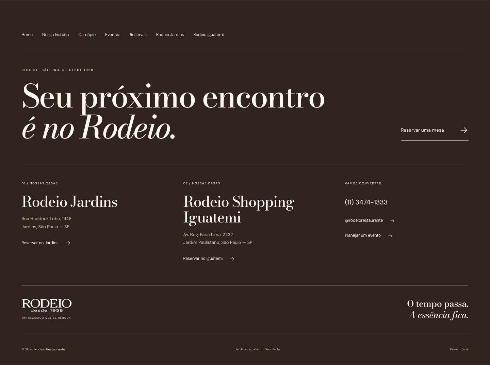
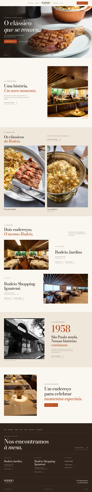
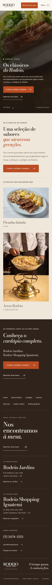
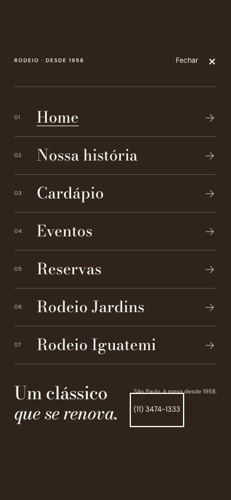
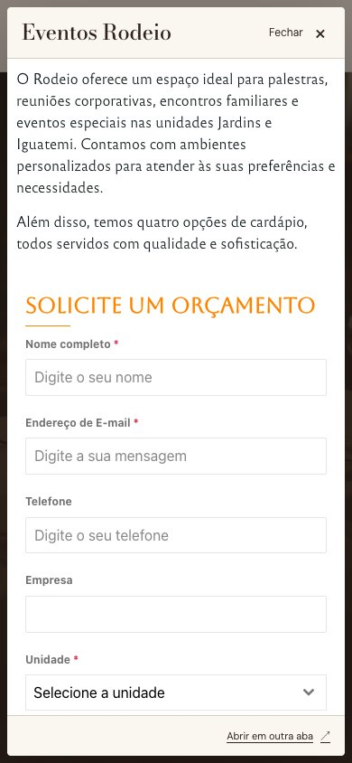

Jumper Studio · revisão de 08 de outubro de 2026
Rodeio.
Checkup de apresentação.
Revisão da versão de desenvolvimento com os últimos ajustes publicados.
Abrir o site em desenvolvimento ↗A nova frase do rodapé foi aplicada e publicada. Só os materiais e confirmações comerciais abaixo continuam pendentes. Os sistemas externos foram carregados, sem envio de reservas ou orçamentos. A finalização foi publicada no endereço de desenvolvimento e conferida novamente.
Últimos ajustes conferidos
- Rodapé: “Seu próximo encontro é no Rodeio”, publicado e conferido nas nove páginas compartilhadas, de 320 a 1920 px.
- Menu: disposição do desktop restaurada; painel móvel ocupa toda a área visível, com rolagem, fechamento, foco e áreas de segurança conferidos.
- Home: seis slides; arraste no celular, indicadores, teclado e reprodução automática funcionando, preservando a rolagem vertical.
- História: linha do tempo vertical, sete parágrafos integrais aprovados e marcos de 1958, 1959, 1986, 2001, 2011 e 2026.
- Cardápio: fotos corretas de Picanha fatiada e Arroz Rodeio, sem deformação; botão “Conferir cardápio completo” destacado; cardápio digital abre no popup.
- Unidades: 77 fotos dos Jardins e 16 do Iguatemi; carregamento progressivo e navegação do lightbox conferidos.
- Eventos: a página oficial carrega no popup; fechamento e retorno ao site funcionando. Nenhum orçamento foi enviado.
- Publicação: dez páginas HTTP 200, públicas sem cookies, correspondentes ao build dos últimos ajustes; finalização registrada na PR #101 do GitHub.
Desempenho
| Página | Celular | Desktop |
|---|---|---|
| Home | 96 | 100 |
| Nossa história | 97 | 100 |
| Cardápio | 95 | 100 |
| Restaurantes | 100 | 100 |
| Rodeio Jardins | 96 | 100 |
| Rodeio Iguatemi | 96 | 100 |
| Eventos | 98 | 100 |
| Reservas | 95 | 100 |
Acessibilidade e boas práticas: 100 nas oito páginas, nos dois perfis. SEO: 69, com bloqueio intencional de indexação da prévia.
Medições Lighthouse de laboratório do checkup de 08/10, anteriores à troca do rodapé. Após a publicação final, a home foi medida novamente: 98 mobile / 100 desktop; acessibilidade e boas práticas 100. Não são dados CrUX de usuários reais nem um resultado da API PageSpeed Insights. Podem variar com conexão, carga e momento da medição. As notas são da página inicial carregada; não atestam o funcionamento posterior dos serviços externos.
Integrações e pendências
Reservas: carregamento conferido
Os formulários das duas unidades carregaram com os nomes e informações corretos em português. A carga de dados foi conferida em Chrome, Firefox e WebKit.
O primeiro teste com a identificação HeadlessChrome sofreu falhas de comunicação no Tagme, reproduzidas também nas páginas oficiais. Repetindo a verificação com identificação convencional do Chrome, sem alterar controles de segurança, os dados carregaram nas duas unidades, sem mensagens CORS. Isso não comprova uma indisponibilidade para visitantes.
Não foram inseridos dados pessoais, selecionados horários ou enviadas reservas; a conclusão de uma reserva não faz parte desta revisão. Os popups de cardápio e Eventos também carregaram o conteúdo real, sem envio de orçamento.
Materiais e confirmação comercial
Continuam pendentes uma foto identificada de evento dos Jardins, o novo material do cardápio físico e a confirmação dos horários por unidade e do telefone individual do Iguatemi.
Capturas da versão revisada
Clique em uma captura para abrir em tamanho completo.
Rodapé após a finalização



As capturas abaixo registram o checkup completo anterior à troca da frase; os demais componentes foram preservados.










Escopo técnico e evidências
194 verificações funcionais em Chrome, Firefox e WebKit, além de 12 capturas dos slides e 18 medições Lighthouse (16 no checkup e duas na home após a finalização). Tamanhos emulados de desktop, tablet e celular; nenhum iPhone físico ou Safari nativo foi testado.
As verificações de acessibilidade automatizadas não encontraram violações nas páginas e componentes examinados; isso não equivale a uma auditoria manual completa.
O inventário bruto de links inclui o href temporário do botão de foto original dentro do lightbox fechado. Esse endereço é substituído pelo controlador antes de abrir a foto; a revisão registra essa exclusão específica no relatório.
- Verificação final do rodapé
- Desempenho da home após finalização
- Notas e métricas de desempenho
- Revisão das páginas
- Suítes funcionais
- Correspondência com a publicação
- Comparação dos formulários de reservas
- Diagnóstico inicial dos navegadores
- Reteste em pt-BR com identificação convencional
- chromium: Access to fetch at 'https://public.tagme.com.br/venues/56c778030896b3cd13c609e5' from origin 'https://reservation-widget.tagme.com.br' has been blocked by CORS policy: No 'Access-Control-Allow-Origin' header is present on the requested resource. | Access to XMLHttpRequest at 'https://public.tagme.com.br/themes/56c778030896b3cd13c609e5' from origin 'https://reservation-widget.tagme.com.br' has been blocked by CORS policy: Response to preflight request doesn't pass access control check: No 'Access-Control-Allow-Origin' header is present on the requested resource. | Access to XMLHttpRequest at 'https://public.tagme.com.br/venues/56c778030896b3cd13c609e5' from origin 'https://reservation-widget.tagme.com.br' has been blocked by CORS policy: Response to preflight request doesn't pass access control check: No 'Access-Control-Allow-Origin' header is present on the requested resource. | Access to XMLHttpRequest at 'https://public.tagme.com.br/venues/56c778030896b3cd13c609e5/availability-for-app/reservationWidget' from origin 'https://reservation-widget.tagme.com.br' has been blocked by CORS policy: Response to preflight request doesn't pass access control check: No 'Access-Control-Allow-Origin' header is present on the requested resource.
- firefox: [JavaScript Error: "Cookie “_ga” has been rejected for invalid domain." {file: "https://reservation-widget.tagme.com.br/reservation/schedule/56c778030896b3cd13c609e5/reservationWidget" line: 0}] | [JavaScript Error: "Cookie “_clck” has been rejected for invalid domain." {file: "https://reservation-widget.tagme.com.br/reservation/schedule/56c778030896b3cd13c609e5/reservationWidget" line: 0}] | [JavaScript Error: "Cookie “_ga_EKDHDQ9TRP” has been rejected for invalid domain." {file: "https://reservation-widget.tagme.com.br/reservation/schedule/56c778030896b3cd13c609e5/reservationWidget" line: 0}] | [JavaScript Error: "Cookie “_ga_EKDHDQ9TRP” has been rejected for invalid domain." {file: "https://reservation-widget.tagme.com.br/reservation/schedule/56c778030896b3cd13c609e5/reservationWidget" line: 0}] | [JavaScript Error: "Cookie “_ga” has been rejected for invalid domain." {file: "https://reservation-widget.tagme.com.br/reservation/schedule/56c778030896b3cd13c609e5/reservationWidget" line: 0}] | [JavaScript Error: "Cookie “_ga_EKDHDQ9TRP” has been rejected for invalid domain." {file: "https://reservation-widget.tagme.com.br/reservation/schedule/56c778030896b3cd13c609e5/reservationWidget" line: 0}] | [JavaScript Error: "Cookie “_ga_EKDHDQ9TRP” has been rejected for invalid domain." {file: "https://reservation-widget.tagme.com.br/reservation/schedule/56c778030896b3cd13c609e5/reservationWidget" line: 0}]